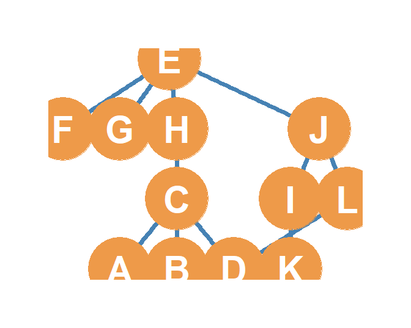
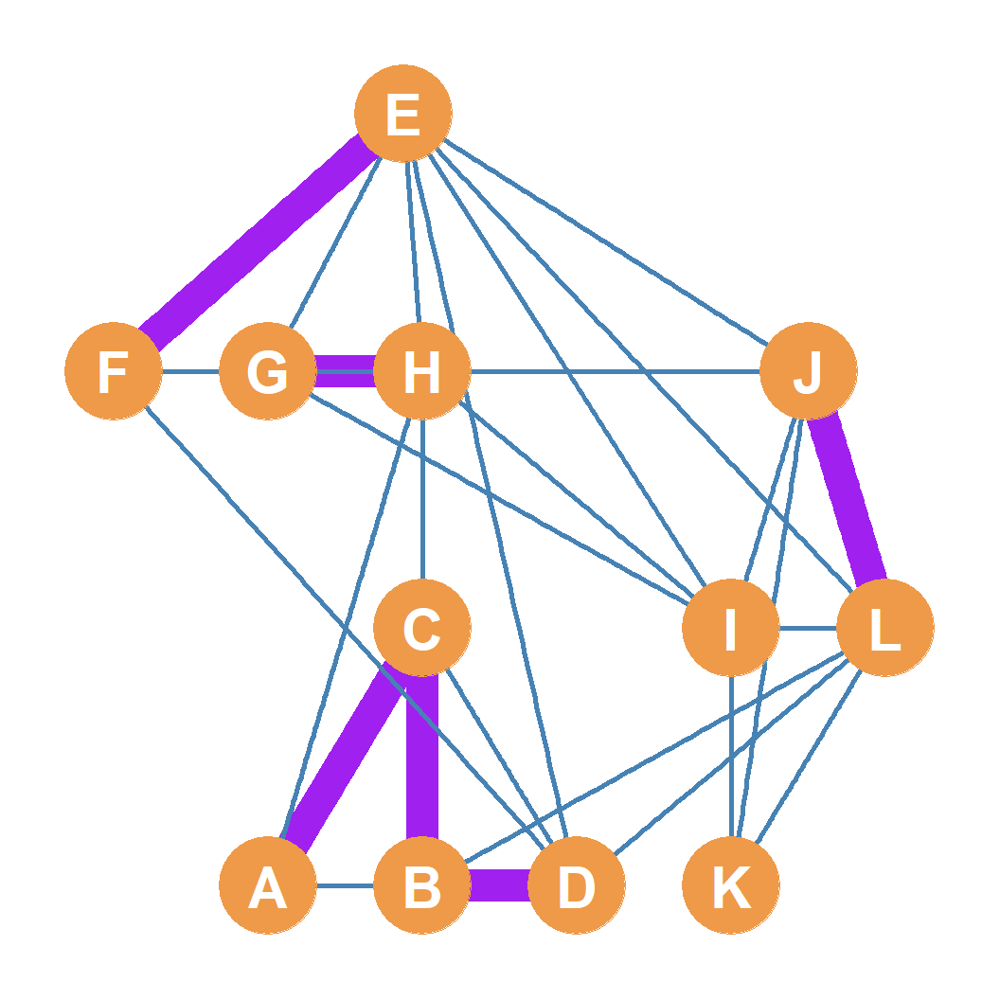
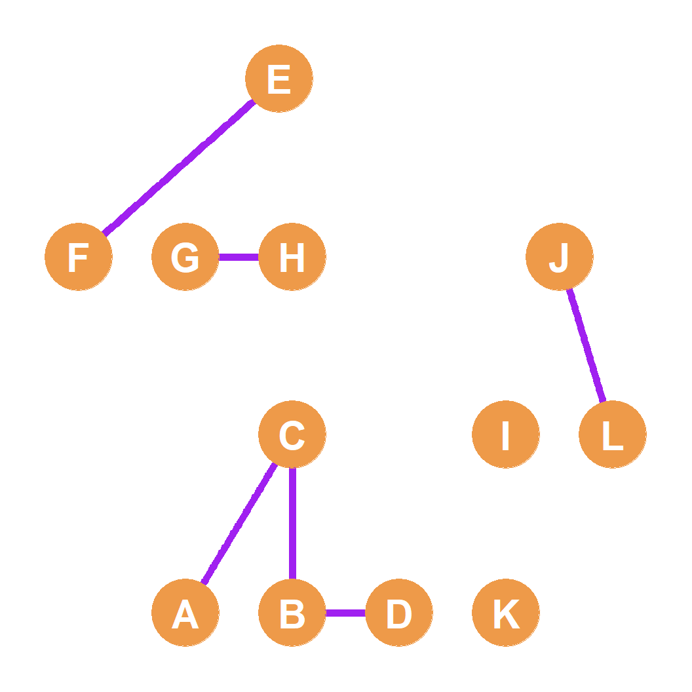
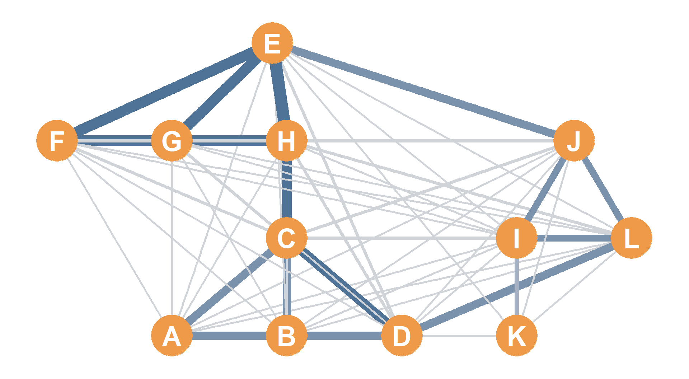

Matrix Algebra in Social Networks
Basic and Advanced Matrix Operations
Part 1: Basic Matrix Operations
The Company Social System
- Suppose we study 12 employees at a small company and record two separate relationships:
- Hanging Out (\(\mathbf{H}\)): Whether they hang out together after work (Blue edges).
- Co-working (\(\mathbf{C}\)): Whether they are assigned to work together in team projects (Red edges).
- How do we combine, compare, or intersect these overlapping structures?
- We use Basic Matrix Operations: addition, subtraction, and the dot (element-wise) product.
Hanging Out (\(\mathbf{H}\))
Co-working (\(\mathbf{C}\))

Matrix Addition (\(\mathbf{H} + \mathbf{C}\))
- Matrix Addition:
- Done element-by-element: \(S_{ij} = H_{ij} + C_{ij}\).
- Requires identical dimensions (\(12 \times 12\)).
- Sociological Meaning:
- Cell value \(2\): Share both hangout and co-working ties.
- Cell value \(1\): Share either hangout or co-working ties, but not both.
- Cell value \(0\): Share no ties.
- Represents a weighted network of overall relationship volume.

Matrix Subtraction & Absolute Value (\(|\mathbf{H} - \mathbf{C}|\))
- Matrix Subtraction:
- Done element-by-element: \(D_{ij} = |H_{ij} - C_{ij}|\).
- Isolates cases where the two relations disagree.
- Sociological Meaning:
- Cell value \(1\): Share exactly one of the ties (hangout or co-working), but not both.
- Cell value \(0\): Share either both ties (\(1-1=0\)), or neither (\(0-0=0\)).
- Represents the symmetric difference (green edges).

Matrix Dot (Hadamard) Product (\(\mathbf{H} \cdot \mathbf{C}\))
- Element-wise Multiplication:
- Cell product: \(P_{ij} = H_{ij} \times C_{ij}\).
- Requires identical dimensions.
- Also called the Hadamard product (distinct from standard matrix multiplication).
- Sociological Meaning:
- Cell value \(1\) only if both \(H_{ij} = 1\) and \(C_{ij} = 1\) (\(1 \times 1 = 1\)).
- Cell value \(0\) otherwise.
- Represents the overlap / intersection of networks (purple edges).

Part 2: Matrix Multiplication
Standard Matrix Multiplication (\(\mathbf{A} \times \mathbf{B}\))
- Unlike the dot product, standard matrix multiplication is not element-wise; it involves multiplying rows of the left matrix by columns of the right matrix.
- The Conformability Rule:
- You can only multiply two matrices if the inner dimensions match.
- In other words, the number of columns in the first matrix (\(\mathbf{A}\)) must equal the number of rows in the second matrix (\(\mathbf{B}\)).
- \[\mathbf{A}_{3 \times \mathbf{5}} \times \mathbf{B}_{\mathbf{5} \times 6} = \mathbf{C}_{3 \times 6}\]
- The Product Dimensions:
- The resulting matrix has dimensions equal to the outer dimensions (Rows of left, Columns of right).
- Non-Commutative:
- Matrix multiplication is order-dependent: \(\mathbf{A} \times \mathbf{B} \neq \mathbf{B} \times \mathbf{A}\).
Step-by-Step Multiplication
- To compute cell \(c_{ij}\) in the product matrix \(\mathbf{C}\):
- Take row \(i\) of left matrix \(\mathbf{A}\) and column \(j\) of right matrix \(\mathbf{B}\).
- Multiply corresponding elements and sum the products (calculating their dot product).
- Example: Cell \(c_{11}\) of \(\mathbf{A}_{5 \times 3} \times \mathbf{B}_{3 \times 5}\)
- Row 1 of \(\mathbf{A}\): \(\{3, 4, 5\}\)
- Column 1 of \(\mathbf{B}\): \(\{3, 4, 5\}\)
- \[c_{11} = (3 \times 3) + (4 \times 4) + (5 \times 5) = 9 + 16 + 25 = 50\]
Matrix A (\(5 \times 3\))
| 3 | 4 | 5 |
| 7 | 9 | 3 |
| 4 | 6 | 2 |
| 5 | 3 | 4 |
| 2 | 5 | 4 |
Matrix B (\(3 \times 5\))
| 3 | 7 | 4 | 5 | 2 |
| 4 | 9 | 6 | 3 | 5 |
| 5 | 3 | 2 | 4 | 4 |
The Identity Matrix (\(\mathbf{I}\))
- The Identity Matrix (\(\mathbf{I}\)) is a special square matrix of order \(N\) with \(1\)s on the main diagonal and \(0\)s on the off-diagonal cells.
- e.g., a \(4 \times 4\) Identity Matrix:
- \[ \mathbf{I} = \begin{pmatrix} 1 & 0 & 0 & 0 \\ 0 & 1 & 0 & 0 \\ 0 & 0 & 1 & 0 \\ 0 & 0 & 0 & 1 \end{pmatrix} \]
- It acts as the multiplicative identity in matrix algebra (equivalent to the number \(1\) in standard math):
- \[\mathbf{A} \times \mathbf{I} = \mathbf{A}\]
- \[\mathbf{I} \times \mathbf{A} = \mathbf{A}\]
Part 3: Advanced Matrix Operations
The Transpose of a Matrix (\(\mathbf{A}^T\))
- The Transpose Operation:
- Reverses the row and column dimensions of a matrix.
- Rows of the original matrix \(\mathbf{A}\) become columns of its transpose \(\mathbf{A}^T\), and columns of \(\mathbf{A}\) become rows of \(\mathbf{A}^T\).
- If \(\mathbf{A}\) is of dimensions \(R \times C\), then \(\mathbf{A}^T\) is of dimensions \(C \times R\).
- Crucial Property:
- The product of any matrix multiplied by its transpose is always defined and conformable:
- \(\mathbf{A}_{R \times C} \times \mathbf{A}^T_{C \times R} = \mathbf{B}_{R \times R}\) (Symmetric Square Matrix).
- \(\mathbf{A}^T_{C \times R} \times \mathbf{A}_{R \times C} = \mathbf{D}_{C \times C}\) (Symmetric Square Matrix).
- The product of any matrix multiplied by its transpose is always defined and conformable:
Matrix Transpose Multiplication: Common Neighbors
- In social network analysis, multiplying an adjacency matrix \(\mathbf{A}\) by its transpose \(\mathbf{A}^T\) yields an incredibly intuitive result:
- The Diagonal Cells (\(b_{ii}\)): Count the total number of neighbors of node \(i\) (the node degree).
- The Off-Diagonal Cells (\(b_{ij}\)): Count the exact number of common neighbors shared by row node \(i\) and column node \(j\).
- \[\mathbf{A} \times \mathbf{A}^T = \mathbf{O}^{Common}\]
- Essential for identifying structural similarity and cliques!
Common Neighbors (\(\mathbf{A} \times \mathbf{A}^T\))
| A | B | C | D | E | F | G | H | I | J | K | L | |
|---|---|---|---|---|---|---|---|---|---|---|---|---|
| A | 2 | 2 | 1 | 1 | 0 | 0 | 0 | 1 | 0 | 0 | 0 | 1 |
| B | 2 | 2 | 1 | 1 | 0 | 0 | 0 | 1 | 0 | 0 | 0 | 1 |
| C | 1 | 1 | 4 | 2 | 1 | 1 | 1 | 0 | 0 | 0 | 0 | 1 |
| D | 1 | 1 | 2 | 4 | 0 | 0 | 0 | 1 | 1 | 1 | 0 | 0 |
| E | 0 | 0 | 1 | 0 | 4 | 2 | 2 | 2 | 1 | 0 | 0 | 1 |
| F | 0 | 0 | 1 | 0 | 2 | 3 | 2 | 2 | 0 | 1 | 0 | 0 |
| G | 0 | 0 | 1 | 0 | 2 | 2 | 3 | 2 | 0 | 1 | 0 | 0 |
| H | 1 | 1 | 0 | 1 | 2 | 2 | 2 | 4 | 0 | 1 | 0 | 0 |
| I | 0 | 0 | 0 | 1 | 1 | 0 | 0 | 0 | 3 | 1 | 0 | 1 |
| J | 0 | 0 | 0 | 1 | 0 | 1 | 1 | 1 | 1 | 3 | 1 | 1 |
| K | 0 | 0 | 0 | 0 | 0 | 0 | 0 | 0 | 0 | 1 | 1 | 1 |
| L | 1 | 1 | 1 | 0 | 1 | 0 | 0 | 0 | 1 | 1 | 1 | 3 |
Matrix Powers (\(\mathbf{A}^n\))
- You can multiply a square matrix by itself recursively to get matrix powers:
- \(\mathbf{A}^2 = \mathbf{A} \times \mathbf{A}\)
- \(\mathbf{A}^3 = \mathbf{A} \times \mathbf{A} \times \mathbf{A}\)
- In network science, the entries of the \(n^{th}\) power of an adjacency matrix have a brilliant graph-theoretic meaning:
- Off-Diagonal Cells (\(a^{n}_{ij}\)): Record the exact number of indirect connections (walks) of length \(n\) connecting node \(i\) and node \(j\).
- Diagonal Cells (\(a^{n}_{ii}\)): Record the exact number of cycles of length \(n\) that start and end at node \(i\).
Walks and Cycles: \(\mathbf{A}^2\) & \(\mathbf{A}^3\)
- Adjacency Matrix Squared (\(\mathbf{A}^2\)):
- Off-diagonals represent the number of walks of length 2 between nodes.
- Diagonals represent the number of walks of length 2 starting and ending at the same node. This is equal to the node degree!
- Adjacency Matrix Cubed (\(\mathbf{A}^3\)):
- Off-diagonals represent the number of walks of length 3 between nodes.
- Diagonals represent cycles of length 3 (triangles).
- Since each triangle can be traversed in two directions, the diagonal cell divided by 2 (\(\frac{a^3_{ii}}{2}\)) gives the exact number of triangles (cliques of size 3) that node \(i\) belongs to!
Walks of Length 3: Weighted Graph Representation
- Plotting the network with edge sizes and color intensities proportional to the entries of \(\mathbf{A}^3\) reveals distinct hangout cliques sharing multiple indirect pathways:

Part 4: Conclusion & Summary
Summary of Matrix Algebraic Power
- Basic operations combine relationships:
- Addition (\(\mathbf{H} + \mathbf{C}\)) counts tie volume; Subtraction (\(|\mathbf{H} - \mathbf{C}|\)) highlights relational disagreements; Dot product (\(\mathbf{H} \cdot \mathbf{C}\)) extracts overlap.
- Conformability dictates multiplication:
- Multiplications are only defined if inner dimensions match.
- Multiplying by Transpose reveals overlaps:
- \(\mathbf{A} \times \mathbf{A}^T\) computes common neighbors (off-diagonals) and degrees (diagonals).
- Matrix Powers map paths:
- \(\mathbf{A}^n\) enumerates walks of length \(n\). \(\mathbf{A}^2\) diagonals are degrees; \(\mathbf{A}^3\) diagonals are twice the number of triangles.